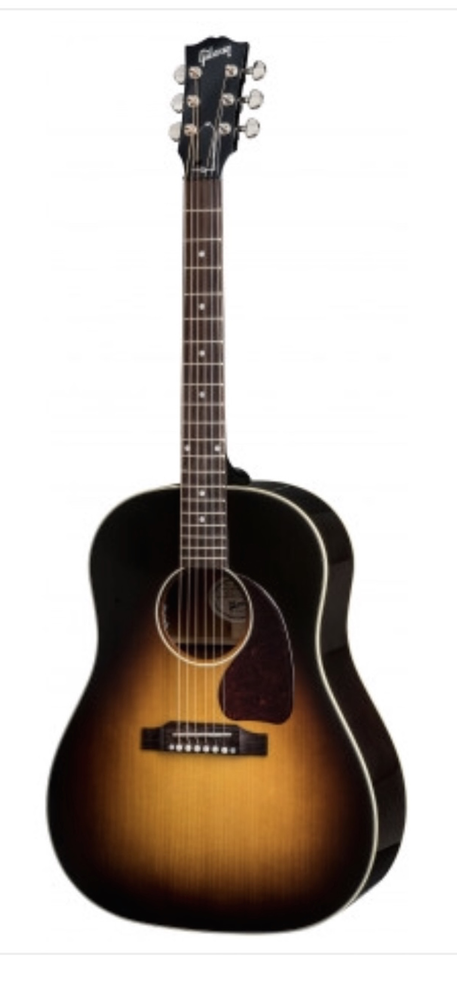
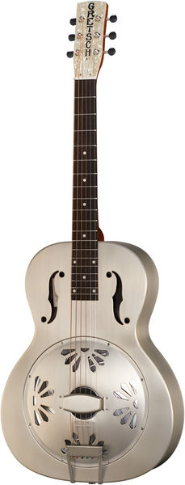
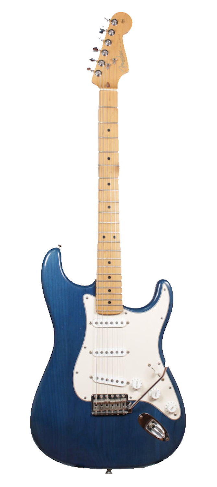
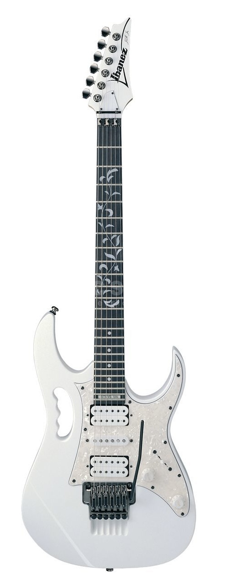
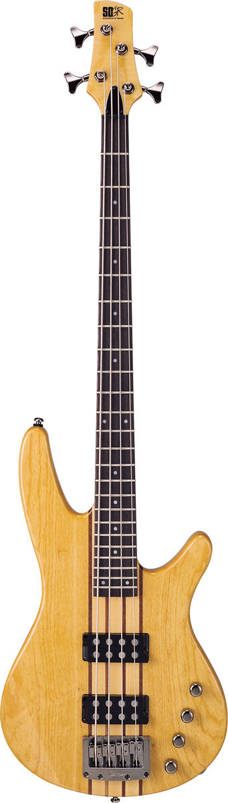

Washburn WD10S12
Washburn WD10S12

Gibson J45 Standard
Gretsch Honeydipper Ltd Edition 1959 Reissue Epiphone ES335
Ltd Edition 1959 Reissue Epiphone ES335

USA Fender Stratocaster
Ibanez Steve Vai Signature JEM Heritage 1950s Reissue Gibson Les Paul Standard
Heritage 1950s Reissue Gibson Les Paul Standard

Ibanez SRX700 Bass